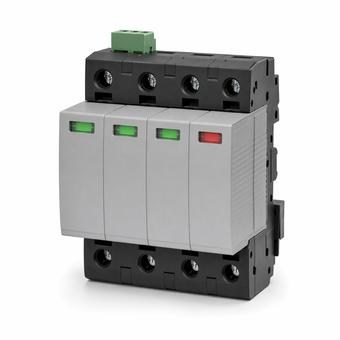

SPD Types 1, 2 and 3: Where Each One Is Allowed
The type number does not rank these devices by quality or by how much energy they absorb. It states where in the system the device is permitted to be connected, and the boundary that matters is the service disconnect.

Key takeaways
- The type number describes the permitted connection point, not performance. A Type 2 is not a weaker Type 1.
- Type 1 is the only type permitted on the supply side of the service disconnect. It may also go on the load side.
- Type 2 is load side only. Type 3 is point-of-utilization and needs protection upstream of it.
- Two ratings have to be checked before any of this matters: the short-circuit current rating against available fault current, and the voltage rating against the maximum continuous phase-to-ground voltage.
On this page · 7 sections
What the type number means
The single most common error about these devices is reading the type number as a grade, as though a Type 1 were heavy-duty and a Type 3 were a budget version. It is not a ranking. Under UL 1449, the standard these devices are listed to, the type classifies the device by where it is permitted to be connected relative to the service disconnect.
There are four. Type 1 and Type 2 are permanently connected devices distinguished by which side of the service disconnecting means they may sit on. Type 3 is a point-of-utilization device, installed near the equipment it protects. Type 4 is a component assembly, which is what goes inside listed equipment rather than onto a wall.
Two devices can therefore have identical surge ratings and different type numbers, and a Type 1 and a Type 2 of the same brand and series frequently do. The difference is what the listing permits, which in turn is about whether the device can be installed without an overcurrent device ahead of it.
The service disconnect boundary
This is where the published answers contradict each other, so it is worth stating plainly.
Type 1 may be connected on the supply side of the service disconnecting means. That is its defining permission, under NEC 242.12. It may also be connected on the load side, subject to the requirements that apply to Type 2 locations — so a Type 1 on a feeder serving a large motor is a normal installation, not a misapplication.
Type 2 may only be connected on the load side of the service disconnect, under NEC 242.14. Within that restriction it is flexible: anywhere on the load side of the feeder overcurrent device, and anywhere on the premises wiring of a separately derived system.
So the asymmetry runs one way. Type 1 can go either side; Type 2 cannot go on the line side. If a source tells you a Type 2 may be installed on either side of the service disconnect, it has the two reversed. The reason behind the rule is overcurrent protection: a device on the supply side has no branch or feeder overcurrent device ahead of it, and only a Type 1 is listed to be connected that way.
Type 3 and the point of use
Type 3 is the plug strip, the receptacle-type device, the unit at the equipment. It is listed as a point-of-utilization device, which carries a consequence people miss: a Type 3 is not a substitute for protection at the service. It is designed to work downstream of a Type 1 or Type 2, dealing with what gets past that device and with transients generated inside the building rather than arriving from outside.
Type 3 listings also carry a minimum conductor length from the service — the device is qualified on the assumption that there is impedance between it and the service entrance. Installing one directly at a panel is outside what it was listed for.
The practical reading: a facility with only Type 3 devices at the equipment has not addressed the service-entrance surge, and a facility with only a service SPD has not addressed what reaches sensitive electronics. These are complementary layers, which is why the trade calls it cascaded protection rather than choosing one.
The two checks that get skipped
Choosing the right type settles where the device may go. It does not establish that this particular device may go there. Two ratings do that, and both get skipped routinely.
Short-circuit current rating. An SPD carries a marked short-circuit current rating, and under NEC 242.10 it may not be installed where the available fault current exceeds it. This is the same discipline as any other equipment SCCR check: it needs a fault-current figure at the point of installation, not an assumption. A service-entrance location in a large facility is precisely where available fault current is highest.
Voltage rating. The device rating has to equal or exceed the maximum continuous phase-to-ground voltage available at the point of application. A device chosen from the nominal system voltage alone can fail this on a system that runs high, and the failure mode is the SPD degrading in normal service rather than during a surge.
Article 242 also rules out certain systems outright unless the device is specifically listed for them: ungrounded systems, impedance-grounded systems and corner-grounded delta systems. A standard SPD assumes a grounded system with a predictable phase-to-ground voltage, and none of those three provide one.
Where an SPD is now required
Surge protection used to be entirely optional. It is not any more, and this is the part of the subject that has changed most recently.
NEC 230.67 requires that services supplying dwelling units be provided with a surge-protective device, and that the device be a Type 1 or Type 2. The requirement reaches replacements as well as new work: replacing the service equipment on an existing dwelling triggers it. Later editions extended the same requirement to additional occupancies, so the scope depends on which edition your jurisdiction has adopted.
Note what the rule does not say. It does not require a Type 1 specifically, and it does not require a device at every panel. A single listed Type 2 at the service satisfies it. Claims that the code mandates a device at the service plus one at every downstream panel are good engineering practice stated as a code requirement, and the two are worth keeping separate when you are signing off on an installation.
Common mistakes
Reading the type number as a performance tier and specifying a Type 1 where a Type 2 is both permitted and identical in surge rating. Installing a Type 2 on the supply side of the service disconnect, which the listing does not allow. Treating plug-strip Type 3 devices as the building's surge protection. Selecting a device from nominal system voltage without checking it against the maximum continuous phase-to-ground voltage. Skipping the short-circuit current rating check at a service entrance, which is the one location where available fault current is most likely to exceed it. Quoting a dwelling-unit requirement from an edition the local jurisdiction has not adopted.
Frequently asked questions
What is the difference between a Type 1 and a Type 2 SPD?
Where each may be connected, not how much surge energy it handles. A Type 1 is listed for connection on the supply side of the service disconnecting means, and may also be installed on the load side. A Type 2 is listed for the load side only. Two devices with identical surge ratings can carry different type numbers, because the type reflects the listed connection point.
Can a Type 2 SPD be installed on the line side of the service disconnect?
No. Type 2 is restricted to the load side of the service disconnect under NEC 242.14. Only a Type 1 is listed for supply-side connection, because a device there has no overcurrent device ahead of it. Sources stating that a Type 2 may be installed on either side have Type 1 and Type 2 reversed.
Do I need both a service SPD and point-of-use devices?
They do different jobs. A Type 1 or Type 2 at the service handles what arrives from outside; a Type 3 at the equipment handles what gets past it and what the building generates internally. A Type 3 is listed as a point-of-utilization device and is not a substitute for protection at the service. Cascaded protection is good practice, but note that the code requirement is for a device at the service, not at every panel.
Does the NEC require a surge protective device?
For dwelling-unit services, yes. NEC 230.67 requires a Type 1 or Type 2 SPD on services supplying dwelling units, including when existing service equipment is replaced. Later editions extended the requirement to further occupancies, so the scope depends on the edition your jurisdiction has adopted. Outside those cases an SPD is a design decision rather than a code requirement.
Next steps
Sizing and coordinating the protective devices around it is covered in short-circuit studies and breaker coordination, and the fault-current figure the SCCR check needs comes from the fault current calculator.
Run the numbers
- Fault Current CalculatorThe available fault current the SPD short-circuit rating is checked against.
Cite or link to this guide
Free to quote with attribution. Suggested citation: Voltfield Editorial Team, “SPD Types 1, 2 and 3: Where Each One Is Allowed” Voltfield, updated September 29, 2026. https://voltfield.org/guide-grid-forming-vs-grid-following.html
Get new guides by email
One short email when a new guide or calculator is published, at most once a month. Your address is used for nothing else.